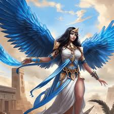

Os Deuses do Egito
Descubra as histórias de Rá, Ísis, Osíris, Anúbis e outros deuses que regiam a vida e a morte no Egito Antigo.

RÁ
Rá (ou Ré) é o deus Sol no Antigo Egito, sendo também conhecido como "Pai dos deuses" e "Pai dos homens". Isso porque, para os egípcios, Rá era a divindade mais importante, e acreditava-se que ele era o criador do mundo, dos deuses e da humanidade. Era considerado o protetor do Egito. Seu principal santuário ficava em Iunu do Norte (chamada de Heliópolis, "cidade do sol", pelos gregos), uma das principais cidades do Egito no ano 3 mil a.C. Rá era especialmente querido pelos faraós. Quéfren foi o primeiro faraó a incorporar o título de "filho de Rá" ao seu próprio nome, costume que foi levado adiante por todos os outros faraós.
Principais Mitos
Explore lendas fascinantes como a criação do mundo, a luta entre Hórus e Seth e a jornada de Osíris.
O mito da criação
De acordo com informações do Centro Americano de Pesquisa no Egito (Arce, na sigla em inglês), a mitologia egípcia conta que, antes da criação, existia apenas a escuridão que envolvia um enorme oceano primitivo chamado Nun. Então, quando o sopro da vida estava forte e pronto, a entidade Atum decidiu que era hora do início da criação. Assim, uma ilha emergiu das águas para sustentar essa divindade, que se manifestou na forma de Rá, o deus Sol do Egito.
O mito de Osíris
De acordo com a Arce, a mitologia egípcia diz que Osíris assumiu o governo do mundo depois de Rá. Por muitos anos, ele foi um governante gentil e sábio, que ensinou aos humanos a agricultura e a civilização, sempre com a ajuda de sua irmã e esposa Ísis, que o auxiliava com criatividade e magia. A posição e prestígio de Osíris, conta a Arce, gerou inveja em seu irmão Set, conhecido por ser indisciplinado. Set invejava tanto Osíris que o matou para herdar seu trono e governar o Egito da maneira que desejava.
O mito de Hórus e Set
De acordo com a Enciclopédia Britannica, plataforma de dados do Reino Unido voltada para a educação, Hórus é um deus da antiga religião egípcia que toma a forma de um falcão. Mas o mito mais famoso que envolve esse deus narra a batalha contra Set pelo trono do Egito.
Simbologia Egípcia
Entenda o significado de símbolos como o Olho de Hórus, o Ankh e os hieróglifos.
Contato
Entre em contato para dúvidas ou sugestões sobre o conteúdo do site.